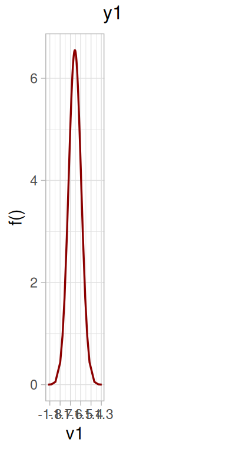
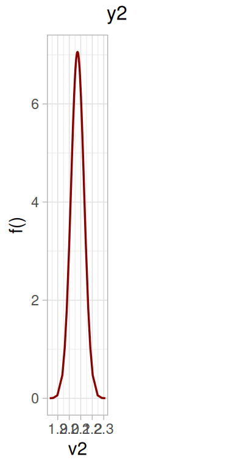
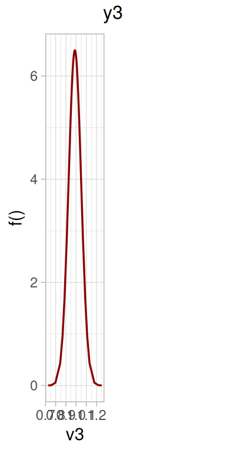
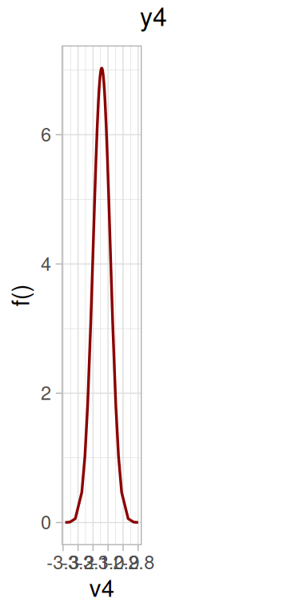
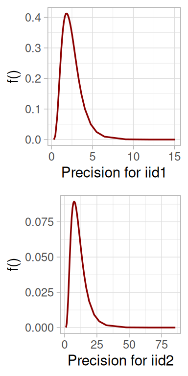
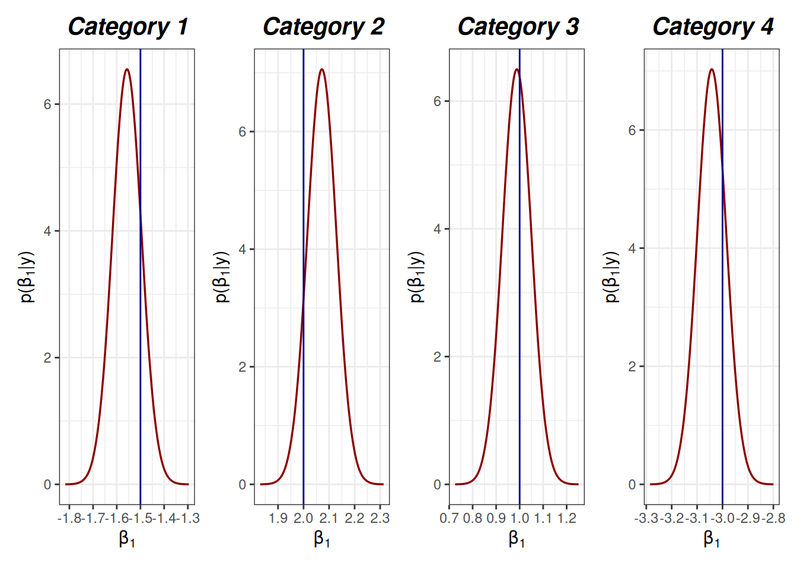
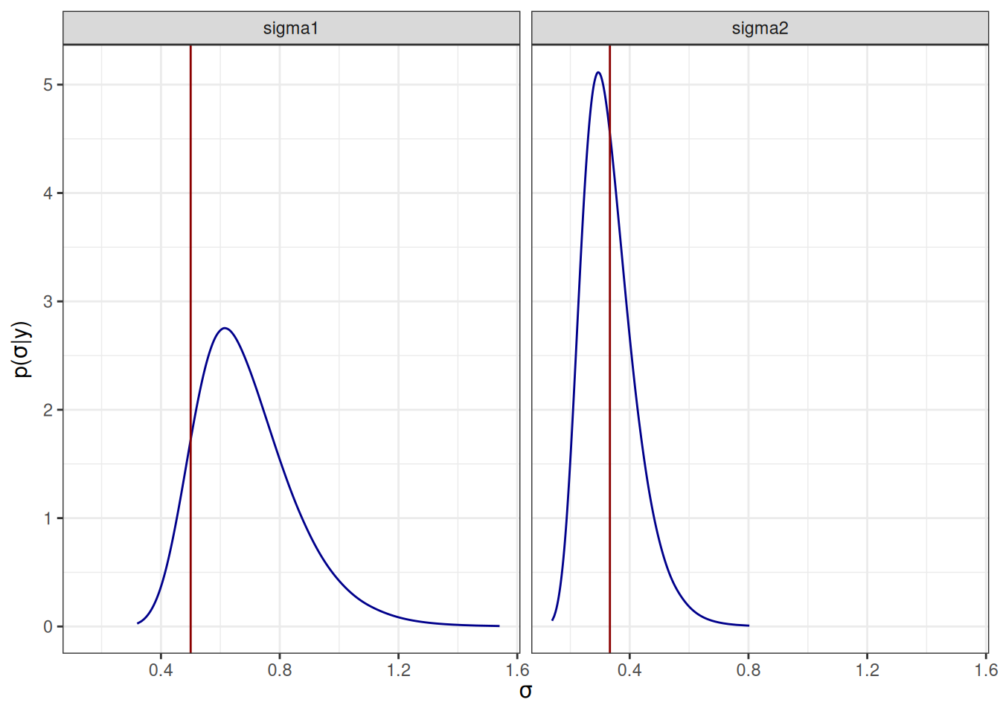

The Integrated nested Laplace approximation for fitting Dirichlet regression models. The case of i.i.d. random effects
Joaquin Martinez-Minaya and Finn Lindgren
Built on 2026-06-03
Source:vignettes/articles/example_random.Rmd
example_random.RmdIntroduction
This vignette is devoted to explain how to use the package dirinla when we deal with Dirichlet mixed models. It can be installed and upgraded via the repository https://github.com/inlabru-org/dirinla. In this manual, we simulate some data from a Dirichlet distribution with i.i.d. random effects to posteriorly fit them using the main function of the package dirinla.
Simulation
This setting is based on a Dirichlet regression with a different covariate per category without intercept and adding two shared independent random effects. We simulated a dataset with size 500. We set values for for to $-1.5, 2, 1, -3 $ respectively, and we simulated covariates from a Uniform distribution on the interval . Random effects and were simulated from Gaussian distributions with mean 0 and standard deviations (precision ) and (precision )} varying the levels of the factor (), in particular, {they were set to . The sub-index assigns each individual to a level of the factor.
As we are in the context of Bayesian LGMs, we established Gaussian prior distributions for the latent field, in this case, formed by the parameters corresponding to the fixed effects and the random effects. In particular, we assigned Gaussian prior distributions with mean 0 and precision to {}, and Gaussian priors distribution with mean and precisions and for the two shared random effects and . PC-prior(1, 0.01) were employed for standard deviation hyperparameters. The generated data did not contain zeros and ones, so we did not use any transformation.
### --- 2. Simulation data --- ####
n <- 500
levels_factor <- 10
cat("n = ", n, " - levels_factor = ", levels_factor," -----> Simulating data \n")
set.seed(100)
cat_elem <- n/levels_factor
cat(paste0(n, "-", levels_factor, "\n"))
#Covariates
V <- as.data.frame(matrix(runif((10)*n, -1, 1), ncol=10))
names(V) <- paste0('v', 1:(10))
tau0 <- 1
### 4 random effects
iid1 <- iid2 <- rep(seq_len(levels_factor), rep(n/levels_factor, levels_factor))
#Desorder index 3
# pos <- sample(1:length(iid3))
# iid3 <- iid3[pos]
V <- cbind(V, iid1, iid2)
# Formula that we want to fit
formula <- y ~ -1 + v1 + f(iid1, model = 'iid') |
-1 + v2 + f(iid1, model = 'iid') |
-1 + v3 + f(iid2, model = 'iid') |
-1 + v4 + f(iid2, model = 'iid')
names_cat <- formula_list(formula)
# Fixed parameters
x <- c(-1.5, 2,
1, -3)
#random effect
prec_w <- c(4, 9)
(sd_w <- 1/sqrt(prec_w))
w1 <- rnorm(levels_factor, sd = sqrt(1/prec_w[1])) %>% rep(., rep(n/levels_factor, levels_factor))
w2 <- w1
w3 <- rnorm(levels_factor, sd = sqrt(1/prec_w[2])) %>% rep(., rep(n/levels_factor, levels_factor))
w4 <- w3
#w3 <- w3[pos]
x <- c(x, c(unique(w1),
unique(w3)))
d <- length(names_cat)
A_construct <- data_stack_dirich(y = as.vector(rep(NA, n*d)),
covariates = names_cat,
share = NULL,
data = V,
d = d,
n = n )
# Ordering the data with covariates --- ###
eta <- A_construct %*% x
alpha <- exp(eta)
alpha <- matrix(alpha,
ncol = d,
byrow = TRUE)
y_o <- rdirichlet(n, alpha)
colnames(y_o) <- paste0("y", 1:d)
y <- y_o
head(y)Fitting the model
The next step is to call the dirinlareg function in order to fit a model to the data. We just need to specify the formula, the response variable, the covariates and the precision for the Gaussian prior distribution of the parameters.
### --- 3. Fitting the model --- ####
t <- proc.time() # Measure the time
formula = y ~
-1 + v1 + f(iid1, model = 'iid', hyper=list(theta=(list(prior="pc.prec", param=c(10, 0.01))))) |
-1 + v2 + f(iid1, model = 'iid', hyper=list(theta=(list(prior="pc.prec", param=c(10, 0.01))))) |
-1 + v3 + f(iid2, model = 'iid', hyper=list(theta=(list(prior="pc.prec", param=c(10, 0.01))))) |
-1 + v4 + f(iid2, model = 'iid', hyper=list(theta=(list(prior="pc.prec", param=c(10, 0.01)))))
model.inla <- dirinlareg(formula = formula,
y = y,
data.cov = V,
prec = 0.01,
verbose = FALSE)
summary(model.inla)To collect information about the fitted values and marginal posterior distributions of the parameters, we can use the methods summary and plot directly to the dirinlaregmodel object generated.
Summary
summary(model.inla)
#>
#> Call:
#> dirinlareg(formula = formula, y = y, data.cov = V, prec = 0.01,
#> verbose = FALSE)
#>
#>
#> ---- FIXED EFFECTS ----
#> =======================================================================
#> y1
#> -----------------------------------------------------------------------
#> mean sd 0.025quant 0.5quant 0.975quant mode
#> v1 -1.557 0.06114 -1.677 -1.557 -1.437 -1.557
#> =======================================================================
#> y2
#> -----------------------------------------------------------------------
#> mean sd 0.025quant 0.5quant 0.975quant mode
#> v2 2.072 0.05673 1.961 2.072 2.183 2.072
#> =======================================================================
#> y3
#> -----------------------------------------------------------------------
#> mean sd 0.025quant 0.5quant 0.975quant mode
#> v3 0.9881 0.06163 0.8673 0.9881 1.109 0.9881
#> =======================================================================
#> y4
#> -----------------------------------------------------------------------
#> mean sd 0.025quant 0.5quant 0.975quant mode
#> v4 -3.042 0.05697 -3.154 -3.042 -2.931 -3.042
#> =======================================================================
#>
#> ---- HYPERPARAMETERS ----
#> =======================================================================
#> mean sd 0.025quant 0.5quant 0.975quant mode
#> Precision for iid1 2.497 1.214 0.8426 2.262 5.50 1.832
#> Precision for iid2 11.102 6.173 3.3020 9.749 26.79 7.406
#> =======================================================================
#> DIC = 103748.0717 , WAIC = 107357.5134 , LCPO = 7836.5387
#> Number of observations: 500
#> Number of Categories: 4
plot(model.inla)




Posterior distributions for the parameters
This section is devoted to check how the fitted model is able to reconstruct the original values for the parameters.
p2 <- list()
beta1 <- expression(paste("p(", beta[1], "|", "y)"))
for (i in seq_along(model.inla$marginals_fixed))
{
#Data combining jags (1) and inla (2)
dens <- rbind(cbind(as.data.frame(inla.smarginal(model.inla$marginals_fixed[[i]][[1]]))))
###
p2[[i]] <- ggplot(dens,
aes(x = x,
y = y)) +
theme_bw() + #Show axes
geom_line(size = 0.6, ,
col = "red4") +
ggtitle(paste0("Category ",i )) +
theme(
plot.title = element_text(color = "black",
size = 15,
face = "bold.italic",
hjust = 0.5)) +
geom_vline(data = data.frame(x = x[i]), aes(xintercept = x), col = "blue4") +
xlab(expression(beta[1])) + #xlab
ylab(beta1)
}
p2[[1]] | p2[[2]] | p2[[3]] | p2[[4]]
Posterior distributions for the hyperparameters
In this part, we prove how posterior distributions have been able to recover the original values for the hyperparameters.
#### Hyperparemeters
#inla_sigma
inla_sigma <- lapply(1:2, function(x) inla.tmarginal(function(x) 1/sqrt(x), inla.smarginal(model.inla$marginals_hyperpar[[x]], factor = 100)))
names(inla_sigma) <- c("sigma1", "sigma2")
# Convertir la lista a data frame y agregar los nombres de los elementos como una columna
inla_sigma_df <- do.call(rbind, lapply(names(inla_sigma), function(name) {
data.frame(value = inla_sigma[[name]], element_name = name)
}))
colnames(inla_sigma_df) <- c("x", "y", "parameter")
ggplot(inla_sigma_df) +
geom_line(aes(x = x, y = y), col = "blue4") +
geom_vline(data = data.frame(x = sd_w,
parameter= c("sigma1", "sigma2")),
aes(xintercept = x), col = "red4") +
facet_wrap(~parameter) +
xlab(expression(sigma)) + #xlab
ylab(expression(paste("p(", sigma, "|", "y)"))) +
theme_bw()